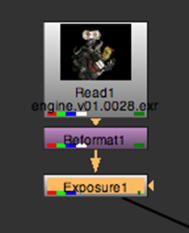
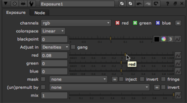

Color-correction and filters can help you integrate the elements for a better composite. In our example, you want to limit the correction to the foreground element only, so you’ll insert a color correction node before the Merge nodes.
| 1. | Select the Reformat1 node. Then, right-click over the Node Graph and choose Color > Exposure. This inserts the Exposure1 node. |

| 2. | Suppose you want to adjust the value of the red color channel. Move the mouse pointer over the Viewer window and press R to display the red channel. |
| 3. | In the Exposure1 control panel, uncheck the box for gang sliders. This allows you to adjust individual color channels. |

| 4. | Drag the red slider to adjust the color values. When you are finished, press R over the Viewer to display all channels. |
The Exposure node worked as expected, but the result is less than spectacular. The color change is too uniform. If only there were a way to limit - or, in fact, mask - the color correction, perhaps we’d see a better composite. Hmm...
|
|